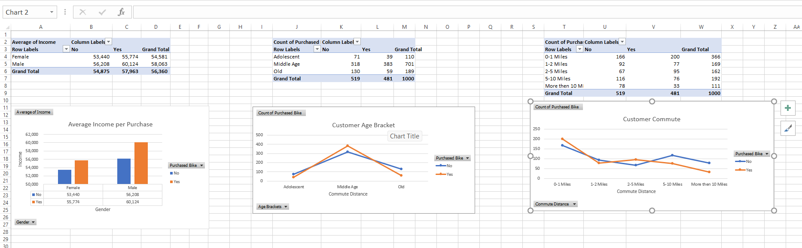

Bike Sales Analysis
The research leverages advanced data analytics and visualization techniques to identify trends and customer preferences. Additionally, predictive models are used to forecast future sales, optimizing inventory management and marketing strategies.
Analysis
1. Males with higher incomes are more likely to make purchases (average income: $58,908) compared to females ($52,901).
2. Buyers residing within 0-1 miles form the largest group (102 buyers), highlighting the strong impact of proximity on purchase decisions.
3. The Middle Age group constitutes the majority of buyers (198 out of 462), indicating it as the most active customer segment.
4.Buyers with higher income levels tend to have a greater likelihood of purchasing, indicating income as a key driver for sales.
Visuals
Fig 1: Pivot Table

Fig 2: Dasshboard
Excel Pivot Table
Bike Sales Analysis was visualized using Excel pivot tables. Download the Excel file to explore further.
Download Excel File